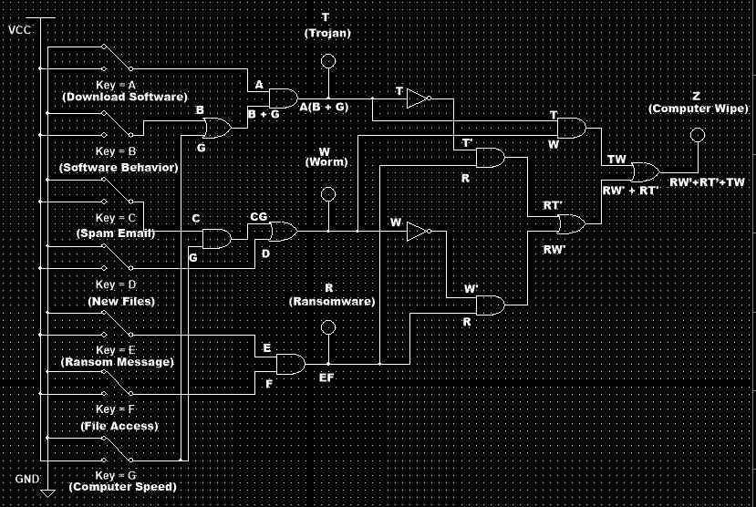

The objective for this project was to create an AOI logic circuit meant to simulate a cybersecurity service that detects three different types of malware. Each type of malware would be detected through 3 inputs each, with 1 input that is common throughout all of the malware types. When malware is detected, there is a seperate output used to determine if users should wipe their computer to eliminate the malware. Since this was a team project, my individual task was to design the Trojan portion of the circuit. I had to use an AND gate and OR gate to fulfill specific conditions for the Trojan malware to be detected at certain input combinations. To determine the different input combinations, I created a truth table and simplified a logic expression to build the circuit.
